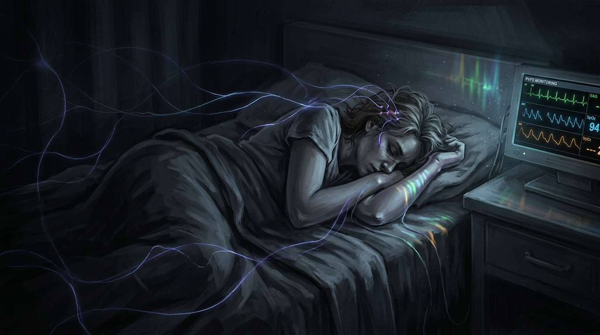

🚨 DATO ALARMANTE 1Fuente: Mayo Clinic Proceedings (2023) & Bateman Horne Center (2025)
La Epidemia Silenciosa: Incapacidad Severa y Confinamiento
⚡ Nivel de Energía Mitocondrial (Post-Esfuerzo Mínimo)100% ➔ 15% (COLAPSO METABÓLICO)

🔍 Ampliar Imagen
📋 Menu
Momento 1 / 11— Jolien Plantinga (Médico General)
“Cuando más aprendí fue cuando me ascendieron a paciente”
Diálogo: "Era residente de psiquiatría hasta mi infección por covid... Pero ahora estoy incapacitada al cien por cien para trabajar."
Cita APA (7ª ed.):Boumeester, G., & Plantinga, J. (Directores). (2023). Doctors as Patients [Documental]. Somatics Film. https://youtu.be/J0ywwLIfH_w
✨ CITA CLAVE DEL MOMENTO 1
“Cuando más aprendí fue cuando me ascendieron a paciente”
— Jolien Plantinga & Gitte Boumeester
Diálogo Destacado: "Era residente de psiquiatría hasta mi infección por covid. Me faltaba un año para convertirme en psiquiatra. Pero ahora estoy incapacitada al 100% para trabajar."
Cita Académica APA (7ª ed.):Boumeester, G., & Plantinga, J. (Directores). (2023). Doctors as Patients: The Unseen Struggle of Long COVID & ME/CFS [Documental]. Somatics Film Production. https://youtu.be/J0ywwLIfH_w